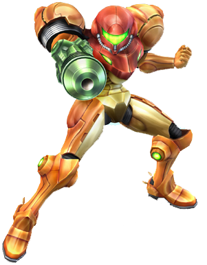
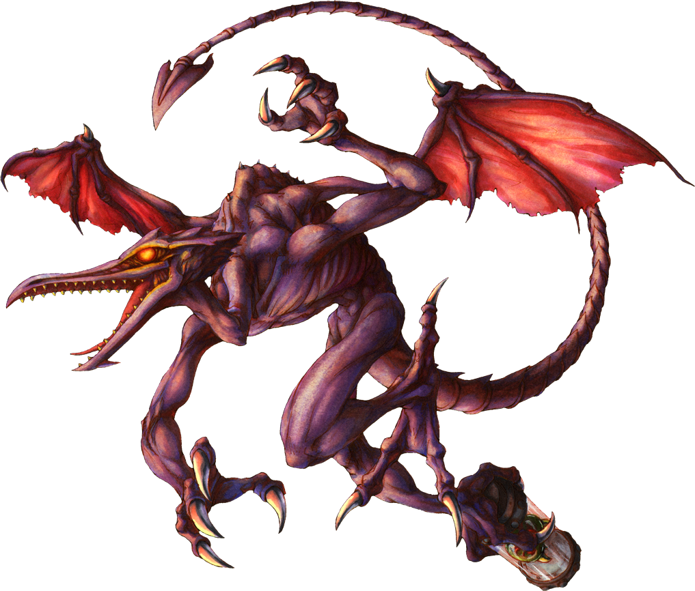
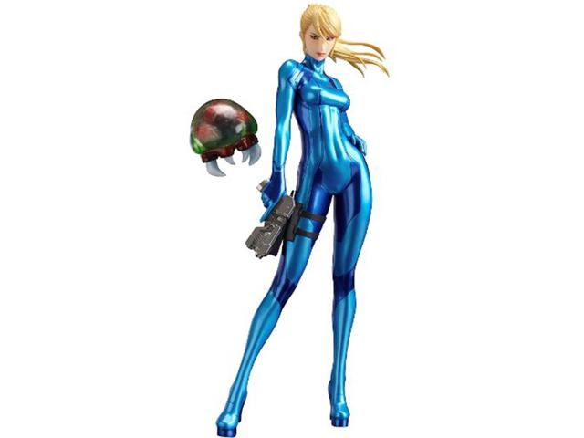
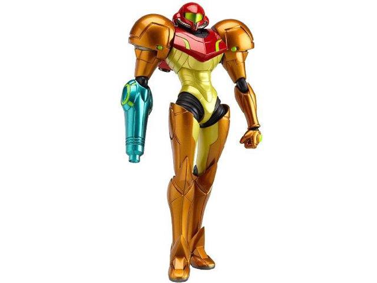

Un Poco Sobre
METROID
Personajes
SAMUS
Es la heroína de esta saga de videojuegos y una cazarrecompenzas espacial. Cuando no tiene su armadura se la conoce como Samus Zero.
Debajo de su armadura viste un mono azul térmico que le hace soportar el peso de ésta.


RIDLEY
El villano más mítico de la saga Metriod. Ha salido en casi la totalidad de las entregas. Es un super pirata espacial con el Cuerpo recubierto
de un acero cósmico muy resistente. El odio tan fuerte que Samus le tiene se debe a que Ridley mató a sus padres.
METROIDS
Los Metroids son criaturas-virus que habitan en el cosmos. Es importante controlarlos pues cuando entran en contacto con el huésped, el segundo
se transforma en una criatura muy poderosa y que no es capaz de controlarse. Han sido numerosas las veces que ha Samus le ha infectado un metroid, haciendola más poderosa
pero también inconsciente.

Armadura de Samus


La avanzada armadura de Samus es antigravitatoria y soporta condiones extremas para que pueda relizar
sus funciones de cazarrecompensas intergaláctica sin morir en el intento.
Consta de un casco que cuenta con visión nocturna y sensor de calor, tiene la habilidad de transaformarse en bola, cuenta con un cañon que lanza tanto energía como misiles y posee unos reactores en la espalda, además de accesorios adicionales.
Consta de un casco que cuenta con visión nocturna y sensor de calor, tiene la habilidad de transaformarse en bola, cuenta con un cañon que lanza tanto energía como misiles y posee unos reactores en la espalda, además de accesorios adicionales.
Juegos
Metroid ha salido en muchas de las
consolas de nintendo, desde la NES
hasta la Nintento Wii. Sus entregas
mas famosas en 2D son Metroid para
NES y el aclamado Metroid Fusion para
Gameboy Advance. En cuanto a sus
entregas en 3D tenemos Metroid Prime,
la más famosa, y Metroid Other Mision,
para Nintendo Wii.
Todo fan de la saga Metroid quiere
que Nintendo siga desarrollando juegos
de esta franquicia y que pronto saque
uno nuevo para la Nintendo Switch
consolas de nintendo, desde la NES
hasta la Nintento Wii. Sus entregas
mas famosas en 2D son Metroid para
NES y el aclamado Metroid Fusion para
Gameboy Advance. En cuanto a sus
entregas en 3D tenemos Metroid Prime,
la más famosa, y Metroid Other Mision,
para Nintendo Wii.
Todo fan de la saga Metroid quiere
que Nintendo siga desarrollando juegos
de esta franquicia y que pronto saque
uno nuevo para la Nintendo Switch
Fans fieles de Metroid